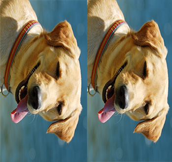
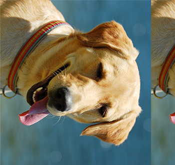
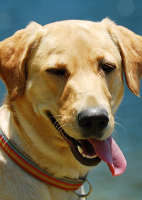
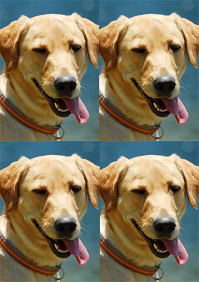

Planteamiento del problema: Impresión a escala
Ejemplo 1
Supongamos que tenemos la siguiente imagen que mide 10.583 cm de ancho por 15.875 cm de alto, o 400x600 pixeles.
¿Crees que sea posible reducirla de tal manera que dos imágenes reducidas juntas cubran de manera exacta la imagen original?
Hagamos la prueba. Reducimos la imagen de tal manera que su altura sea de 10.583 cm o 400 pixeles, es decir, igual al ancho de la imagen original. Para que la imagen no se distorsione, su ancho tiene que ser de 7.055cm (o 265 pixeles); solo así se conserva la relación aparente de la imagen original, 15.875:10.583. Finalmente colocamos dos imágenes juntas para que queden así:
Puedes notar que si se mantiene la relación aparente de la imagen original, sobra un espacio (en gris). Si quisiéramos que las imágenes cubrieran de manera exacta la imagen original, tendríamos que ignorar la relación aparente, lo que provoca una distorsión:
Ejemplo 2
Consideremos ahora una imagen que mide 5.62 cm de ancho por 5.29 cm de alto (o bien 425x400 pixeles).
Con esta imagen, el problema del escalado se hace aún más patente. Para lograr que las imágenes quepan una al lado de la otra dentro de las dimensiones originales, nuevamente habría que ignorar la relación aparente, lo que provocaría una distorción muy grande, o bien habría que hacer un recorte muy considerable en una de las imágenes.
|

|

|
Planteamiento del problema
En ambos ejemplos lo que en realidad estamos buscando es que al reducir la imagen como lo hemos hecho, preservando la relación aparente, la reducción cubra de manera exacta la mitad de la hoja. Vimos que eso no pasa en estos dos casos, lo cual nos lleva a preguntarnos cuál es la razón que debe existir entre los lados de la hoja para que sí se cumpla.
Una vez determinada esta razón, podemos repetir el proceso de reducción tantas veces como queramos, es decir, tomamos la fotografía reducida, la reducimos de manera que el lado más largo tenga el tamaño del lado pequeño de la reducción anterior, y así sucesivamente.
|

|

|
¿Por qué nos interesa que no falte ni sobre espacio? Si al reducir las imágenes para imprimirlas, éstas cupieran de manera exacta en la hoja, no habría que hacer recortes, lo que implica no desperdiciar papel, ni tiempo para recortar el papel sobrante. Cabe mencionar que para lograr esto, evidentemente el papel en el cual se hace la impresión debe tener las mismas dimensiones que la imagen original.
Problema
Resumiendo, el problema que abordaremos en esta unidad consiste en encontrar la razón entre los lados de una foto, de manera que al reducirla quepa exactamente
dos, cuatro, ocho, ... veces en sí misma, sin que falte ni sobre espacio.